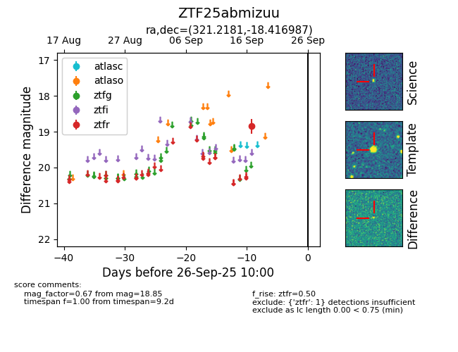

FINK: ZTF25abmizuu
Lasair: ZTF25abmizuu
ALeRCE: ZTF25abmizuu
ZTF25abmizuu (ztf,fink)
equatorial (ra, dec) = (321.2181,-18.41699)
galactic (l, b) = (31.9545,-41.91913)

last ztfr=18.85
1 ztfr detections